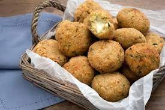
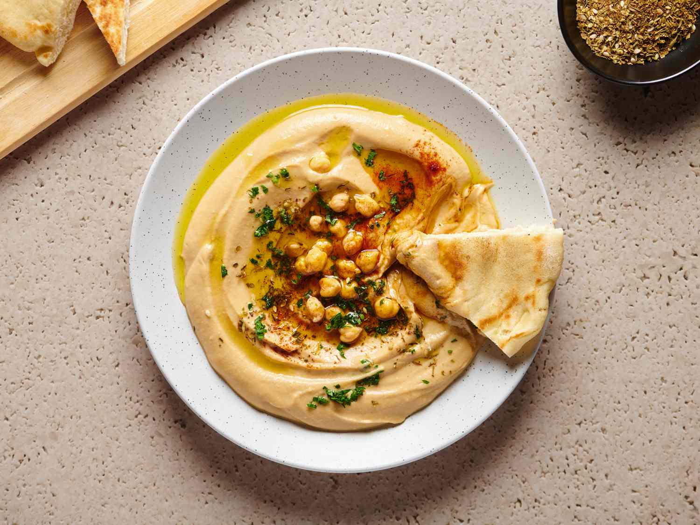

Varie ricette vegetariane
Boccoccini di quinoa
- Quinoa 150 g
- Uova 1
- Scorza di limone da grattugiare 1
- Sale fino q.b.
- Zucchine piccole 2
- Grana Padano DOP da grattugiare 50 g
- Zenzero fresco da grattugiare q.b.
- Pepe nero q.b.
>
HUMMUS!
- Ceci precotti (peso sgocciolato) 500 g
- Succo di limone 90 g
- Tahina 70 g
- Aglio (facoltativo) 1 spicchio
- Olio extravergine d'oliva 50 g
- Acqua q.b.
- Sale fino q.b.
>